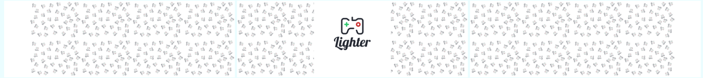

CS1102 Project (2021-2022 Semester B)
[Wong Ming Hui Harrison] ( [56202133] )

References
- Ching, C. (2021, February 4). How to make an app in 2021 from start to finish (10 steps). CodeWithChris. Retrieved March 30, 2022, from https://codewithchris.com/how-to-make-iphone-apps-with-no-programming-experience/#1-generate-an-app-idea
- Biggest app stores in the world 2021. Statista. (2022, January 27). Retrieved March 30, 2022, from https://www.statista.com/statistics/276623/number-of-apps-available-in-leading-app-stores/
- Milos Timotic. (2019, August 23). 11 Best Mobile App Makers in 2021 to make your own mobile app. TMS. Retrieved March 30, 2022, from https://tms-outsource.com/blog/posts/10-best-mobile-app-makers-in-2019-to-make-your-own-mobile-app/
- App Builder Appy Pie: #1 no-code platform: App maker: Connect apps: Websites: Chatbots: Designs. Appy Pie. (n.d.). Retrieved March 30, 2022, from https://www.appypie.com/